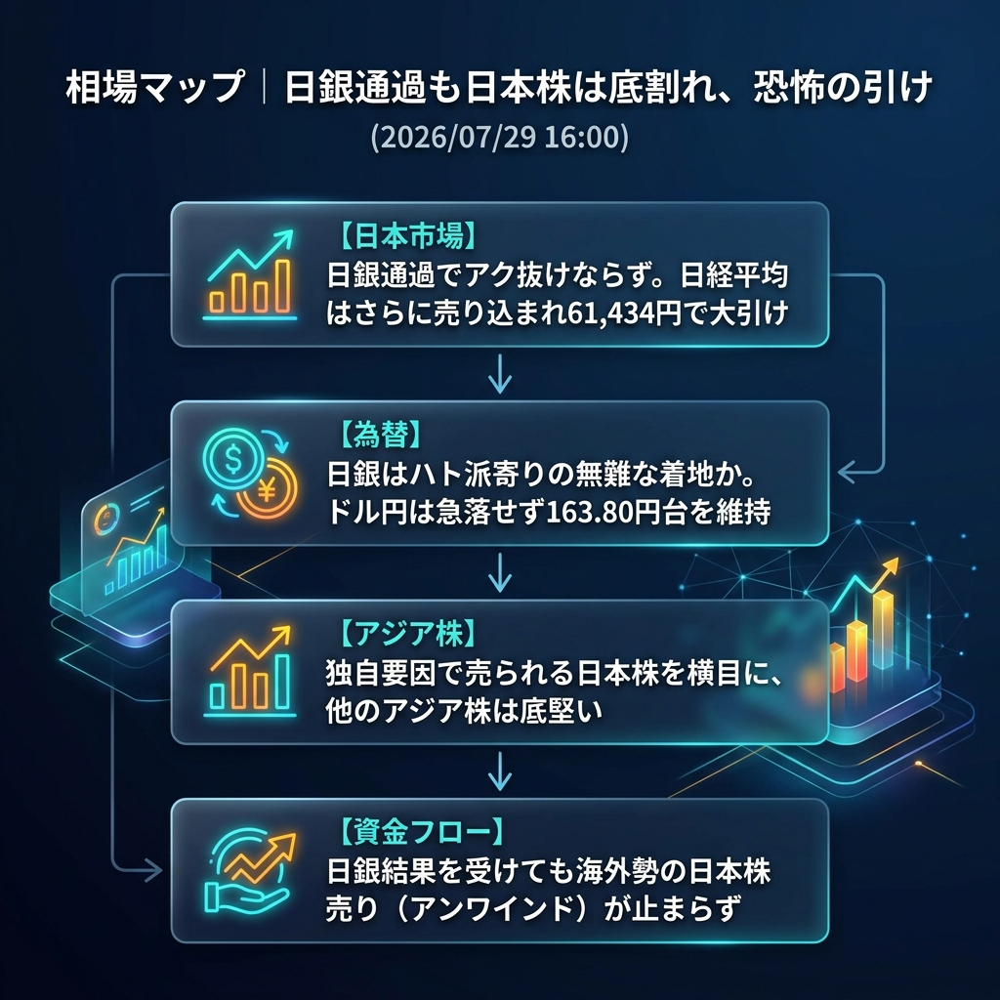

日銀イベントを通過したものの日本株の「アク抜け」にはならず。海外勢の売りが続き、日経平均はさらに下値を掘って61,434円と1,000円近い急落で大引けを迎えました。為替はハト派的な受け止めもあってか163.80円台を維持し、パニック的な円高は免れています。
「日銀通過でも止まらない日本株売り」と「アジア株とのデカップリング」。
日銀の政策発表を受けて、一時的に乱高下を見せたものの、結果的に日本株は「失望」もしくは「材料出尽くしの売り（アンワインド）」が優勢となり、61,000円台前半まで叩き落とされました。他のアジア株は底堅く推移していることから、日本株固有の需給悪化（海外CTA等の機械的な売り）が依然として相場を支配しています。